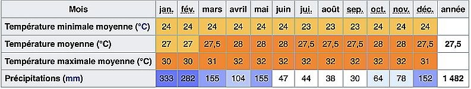

VISA
You don't get to be mom if you can't fix everything just right.
Location
Until you stalk and overrun, you can't devour anyone.
Galerie
There's never enough time to do all the nothing you want.
spot
There's never enough time to do all the nothing you want.
Envie d’un break loin de la France et sous le signe du bien-être ?
Bali est l’endroit idéal pour cela !
Il règne sur l’île une atmosphère apaisante, sans nul doute liée à la force de la spiritualité,
qui occupe une place prépondérante dans la vie des habitants, rythmée par les cérémonies. Au cœur de paysages dont l’harmonie semble être contagieuse,
on pratique le yoga et la méditation.
L’offre de retraites et de cures ayurvédiques, notamment est importante.
Partout, on succombe à la tentation des massages relaxants à l’huile,
mais on peut aussi opter pour un soin à visée thérapeutique,
comme ceux pratiqués par les guérisseurs traditionnels, en cas de souci de santé.
On l’aura compris, en plus de ses attraits culturels, Bali est une destination bien-être de premier plan.
Un atout de plus au compteur de l’île indonésienne !
Bali est l'une des îles les plus petites mais aussi les plus célèbres d'Indonésie.
Bali, l’« île des dieux », distille un charme et une beauté magnétiques.
Bali est est l’une des îles les plus petites de l’archipel indonésien,
mais de loin la plus convoitée par les touristes,
tandis que Lombok commence à pointer le bout de son nez.
Ce petit paradis rassemble tous les éléments indispensables à des vacances réussies.
De belles plages à Bali même si elles ne sont pas toutes baignables ,
des reliefs volcaniques extraordinaires habillés de forêts,
des collines où s’étagent des rizières dont les courbes font danser la lumière,
ainsi qu’une ferveur hindouiste omniprésente et toujours authentique.
Et puis les Balinais séduisent par leur douceur et leur étonnante gentillesse.
Qu’ils vivent au cœur des zones touristiques ou dans des hameaux isolés,
les Balinais n’ont perdu ni leur calme ni leurs coutumes.
Quel plaisir de les voir sacrifier, comme si rien d’autre n’importait,
au rituel quotidien des offrandes que l’on retrouve devant chaque boutique, sur les ponts,
au bord des rizières ou sur les autels ornant les jardins.
Peut-être est-ce cette présence constante du divin qui rend les Balinais si affables,
et leur permet de survivre au boom touristique sans complètement vendre leur âme…
Bali est l’endroit idéal pour cela !
Il règne sur l’île une atmosphère apaisante, sans nul doute liée à la force de la spiritualité,
qui occupe une place prépondérante dans la vie des habitants, rythmée par les cérémonies. Au cœur de paysages dont l’harmonie semble être contagieuse,
on pratique le yoga et la méditation.
L’offre de retraites et de cures ayurvédiques, notamment est importante.
Partout, on succombe à la tentation des massages relaxants à l’huile,
mais on peut aussi opter pour un soin à visée thérapeutique,
comme ceux pratiqués par les guérisseurs traditionnels, en cas de souci de santé.
On l’aura compris, en plus de ses attraits culturels, Bali est une destination bien-être de premier plan.
Un atout de plus au compteur de l’île indonésienne !
Bali est l'une des îles les plus petites mais aussi les plus célèbres d'Indonésie.
Bali, l’« île des dieux », distille un charme et une beauté magnétiques.
Bali est est l’une des îles les plus petites de l’archipel indonésien,
mais de loin la plus convoitée par les touristes,
tandis que Lombok commence à pointer le bout de son nez.
Ce petit paradis rassemble tous les éléments indispensables à des vacances réussies.
De belles plages à Bali même si elles ne sont pas toutes baignables ,
des reliefs volcaniques extraordinaires habillés de forêts,
des collines où s’étagent des rizières dont les courbes font danser la lumière,
ainsi qu’une ferveur hindouiste omniprésente et toujours authentique.
Et puis les Balinais séduisent par leur douceur et leur étonnante gentillesse.
Qu’ils vivent au cœur des zones touristiques ou dans des hameaux isolés,
les Balinais n’ont perdu ni leur calme ni leurs coutumes.
Quel plaisir de les voir sacrifier, comme si rien d’autre n’importait,
au rituel quotidien des offrandes que l’on retrouve devant chaque boutique, sur les ponts,
au bord des rizières ou sur les autels ornant les jardins.
Peut-être est-ce cette présence constante du divin qui rend les Balinais si affables,
et leur permet de survivre au boom touristique sans complètement vendre leur âme…
.jpg )
Bali info :
Bali est une île du Sud de l'Indonésie située entre les îles de Java et de Lombok. Elle fait partie des petites îles de la Sonde. Sa superficie est de 5 637 km2. La population de l'ensemble des îles de la province de Bali était de 4 317 404 habitants en 2020, soit une densité de 750 habitants/km2. Administrativement, l'île fait partie de la province du même nom et accueille sa capitale (ibu kota), Denpasar, dans le sud de l'île.
Climat:
